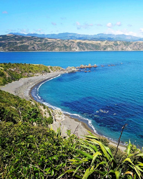
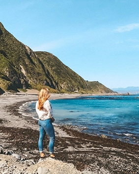
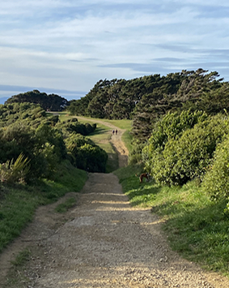
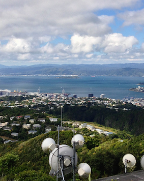
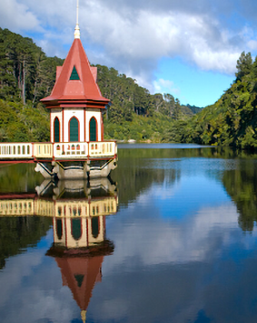

The Eastern Walkway extends along the southern end of Miramar Peninsula from Tarakena Bay to Pass of Branda. The 2.5km track takes about 1.5 hours to complete. The surface is mainly gravel, and much of the track is exposed to the elements, so bring sturdy shoes and warm clothing.
Along the walk, there are signposted Māori historic sites, picnic spots, and regenerating native bush. The Atatürk Memorial at the southern end of the peninsular offers spectacular views of Wellington Harbour. Named after Mustafa Kemal Atatürk, the divisional commander at Gallipoli and, latterly, the first president of modern Turkey, it commemorates all fallen soldiers at Gallipoli in 1915.
Formed about 200 million years ago, Red Rocks is an unusual rock formation of ancient volcanic pillow lava embedded in greywacke and red siltstone. The resulting colour makes for an area of national significance.
Located on the southern coast west of Island Bay, the 7.4km trail is open to walkers, bikers, or recreational four-wheel drivers. Its fascinating geology spawned Māori myths, including one where Kupe, the famous Polynesian explorer, bled after a paua clamped shut on his hand while he tried to gather some to eat.
This easy, flat track will take 2-3 hours return when walking, guiding you along the coast from Ōwhiro Bay Quarry, past a small group of historic baches built in the early 1900s, and out to Devil’s Gate at Sinclair Head.


Te Ahumairangi Northern Walkway and Ridgeline Loop Track is located in Wellington. It's a good steep walk through the forest with stunning city and harbour views at the top. There are some slippery sections on the way, and good hiking or outdoor shoes are recommended.
Keep your eyes open for the kererū birds.
The Wrights Hill Lookout Loop takes you around the historic Wrights Hill Fortress to the summit, past many WWII fortifications. The fortress is mostly an underground network of tunnels, but you can still see some historic gun emplacements above ground.
The trailhead is directly opposite the middle car park on Wrights Hill Road. Look for the ‘Wrights Hill Lookout’ sign and cross the road when it is safe. Walk up the first section, known as John’s Track. Take the first left and you will shortly join the Lookout track.
Continue up the hill until you come to a t-intersection. Turn right to go to the lookout and the Wrights Hill gun emplacements. The lookout has great views over Wellington city and the nearby Mākara wind farm.

